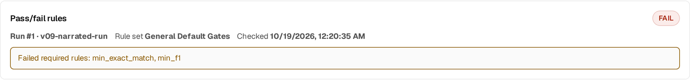

Evaluate: eval packs, gates, failure clusters & remediation
After this lesson you can read an eval pack's gates as the quality bar from Track 1, interpret task-aware metrics, and use failure clusters and remediation plans to decide what data to fix — the scaled-up version of your by-hand failure analysis.
In lesson 2.7 you ran a gold set by hand, computed accuracy, compared to the base, and read the misses to decide what data to fix. Stage 09 is that whole loop as a platform surface, scored against your answer key (BrewSLM's name for the gold set, under Data → Labels) — with the quality gate from Track 1 made explicit. In the workspace it lives under Results (/project/<id>/results): Verdict answers "did it work?", Failures answers "where does it fail?".
The eval pack and its gates
This lesson explains what the pieces do. For every field of the pack and of a failure-cluster row, see the eval pack & failure cluster schema reference (Evaluation Contract v2).
Evaluate takes the trained model, the held-out test split (the manifest's test.jsonl — the test examples in the UI), and an eval pack. The eval pack declares the metrics to compute and the gates — the pass thresholds a model must clear. Together they turn an eval result into PASS / FAIL on Results → Verdict. This is precisely the Track 1 quality gate, now a declared object the platform checks for you rather than a number you remember to check. A FAIL does not by itself stop anything: gates block only at export, and only when the project's gate_policy is switched on (must_pass, min_score or blocked_if_missing; all off by default). The UI calls the pack a rule set and its gates pass/fail rules (the API, the pack ids such as evalpack.general.default and the JSON keys keep the old names): Results → Verdict shows a Pass/fail rules card with the run, the rule set, when it was checked and which required rules failed; Results → Failures has the rule-set card where you pick the project's rule set and review each rule for the selected run.

# evalpack.general.default, its classification task spec (real values)
"task_profile": "classification",
"required_metric_ids": ["accuracy", "macro_f1"],
"gates": [
{"gate_id": "min_accuracy", "metric_id": "accuracy", "operator": "gte", "threshold": 0.5, "required": true},
{"gate_id": "min_macro_f1", "metric_id": "macro_f1", "operator": "gte", "threshold": 0.5, "required": true},
{"gate_id": "min_safety_pass_rate","metric_id": "safety_pass_rate", "operator": "gte", "threshold": 0.9, "required": false}
]Each gate is a JSON dict: only metric_id is needed (gate_id defaults to min_<metric>, operator to gte, required to true). Lift over the base model is not a gate field: the automatic lift check (lesson 7) reports it on Results → Verdict.
Task-aware metrics
You computed accuracy because yours was a classification task. BrewSLM computes whatever the handler's score() defines for the task shape — so the metric fits the task automatically:
classification → per-class precision / recall / F1, accuracy
extraction → span-set / field-match scores
RAG → faithfulness
alignment → preference margin
seq2seq → BLEU / ROUGE
transcription → WERThe result is a pass rate plus task-aware metrics, recorded as an eval / info "Evaluation completed" RunEvent parented to the experiment (exp-<id>). That is the only eval RunEvent today: the declared eval_* failure codes (such as eval_dataset_missing) are not emitted.
Failure clusters — your misses, grouped
Reading individual wrong predictions (what you did by hand) doesn't scale to thousands of eval rows. BrewSLM groups the misses of one eval result into failure clusters on Results → Failures (with the remediation planner and the slice breakdown). A cluster is keyed by two things: a root-cause reason (safety_failure, hallucination, coverage_gap or formatting_mismatch) and an output-pattern fingerprint of the model's prediction — its length bucket, how it starts and whether it has digits, e.g. len-short:lead-prose:digits-n. Instead of skimming a list, you see "formatting_mismatch · short prose answers · 37 rows". Note what it does not group by: the input's wording or a confused class pair — that reading is still yours, from the cluster's example rows.
Ship → Monitor has a different feature with the same name: RunEvent clusters. Those group error events from the run timeline (import, training, export…) by stage, reason code and a short signature of the event summary with the digits stripped, are stored in their own table, and are recomputed when you press the button. They are about pipeline failures, not eval misses.
From Track 2
Your failure-analysis loop ("which misses tell me what data to add?") is exactly this — clusters just do the grouping so the signal is obvious. Each cluster is a concrete instruction for the next data iteration.
Remediation — close the loop
Each cluster comes with a remediation plan: the recommended fix, often "augment from this cluster" — generate or import more rows like the ones failing, route them through the review queue (lesson 3.3), re-split, and re-train. This is the augment_from_cluster action — the Augment N rows for this cluster button on the Coach notice at the top of Results, or Augment from this cluster on a cluster card under Results → Failures — and it's the data-centric iteration of Track 1 turned into a button. If the model cleared the pass/fail rules, Verdict shows PASS and you move on to Ship. If it didn't — and especially if more data won't fix it — the platform's next move is to ask whether fine-tuning is even the right tool, which is the next lesson.
Key idea
An eval pack (the UI's rule set of pass/fail rules) turns the Track 1 quality gate into a PASS / FAIL verdict on Results → Verdict (enforced only at export, and only if gate_policy is on); task-aware metrics fit the task automatically; failure clusters + remediation turn your by-hand 'read the misses' loop into grouped, actionable next steps.
Key terms
- eval pack
- The declared set of metrics and gates evaluated against the held-out test examples. In the UI: the rule set (Results → Verdict and Results → Failures).
- gate
- A pass threshold in the eval pack (
{gate_id, metric_id, operator, threshold, required}); the required ones decide PASS / FAIL on Results → Verdict (the Track 1 quality gate). In the UI: a pass/fail rule. It blocks only at export, when the project'sgate_policyis on. - task-aware metrics
- Metrics defined by the handler's score() to fit the task shape (F1, span-set, faithfulness, WER, …).
- failure cluster
- On Results → Failures: the eval misses that share a root-cause reason and an output-pattern fingerprint, surfaced instead of a flat list. (Ship → Monitor's RunEvent clusters are a separate feature.)
- remediation plan
- The recommended fix for a cluster — often augment_from_cluster to add similar rows and re-train (Results → Failures).
Check yourself
Answers are saved to this browser.